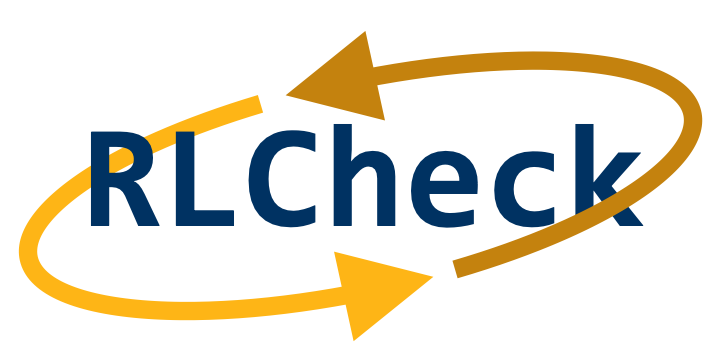
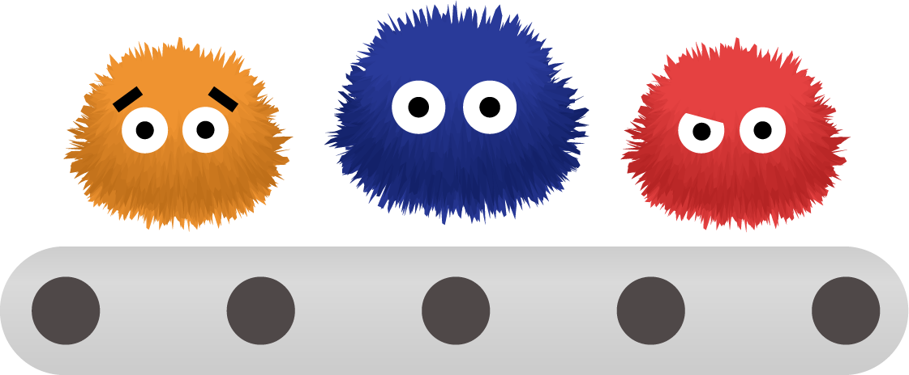
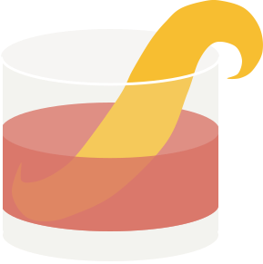
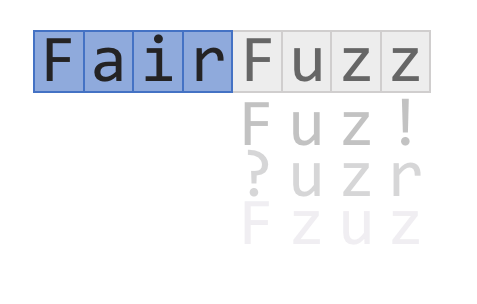

Caroline Lemieux
Incoming Assistant Professor (Fall 2022)University of British Columbia
Department of Computer Science
Email: clemieux@cs.berkeley.edu
Twitter: @cestlemieux
Github: carolemieux
Apr 2021: I will be joining Microsoft Research NYC as a postdoctoral researcher over 2021-2022!
About
My research aims to help developers improve the correctness, security, and performance of software systems. I am particularly interested in developing methods that are applicable to large, existing software systems, ranging from complex open-source projects to industrial-scale software. This leads to a broad array of research interests over software engineering and programming languages topics: test-input generation, specification mining, program synthesis, My interest in looking at analyzing large software systems with fuzz testing touches the systems and security communities.
In May 2021, I received my Ph.D. at the University of California, Berkeley, where I was advised by Koushik Sen. My PhD research focused on automatic test-input generation, particularly fuzz testing, with the goal of producing inputs that induce correctness, security, and performance bugs in software. I also explored how the search techniques used to scale these input generation tools apply in the domain of program synthesis. My dissertation is available on the EECS department website.
In Summer 2018, I interned at Google, where I built large-scale static analysis to automatically generate fuzz targets. My team continued building on my work after my departure, resulting in the FUDGE tool. In Summer 2017 I was a research intern in the Tools for Software Engineers group at Microsoft, working on automating detection of anomolous errors in the distributed build system CloudBuild. At UBC, I worked with Ivan Beschastnikh on automated specification mining tools.
In May 2016 I received my B.Sc. (in Combined Honours Computer Science and Mathematics) at the University of British Columbia, and was awarded the Governor General's Silver Medal for highest standing in the graduating class of the Faculty of Science.
If you are on the academic job market, you may be interested in perusing my research, teaching, and diversity statements.Projects
Current
|  | Effective property-based testing relies on the rapid generation of many diverse valid inputs for the program under test. However, when validity constraints on inputs are complex, this requires building specialized generators for each program under test. However, if an existing generator generates a superset of all valid inputs, we should be able to guide it to generate only valid inputs. RLCheck uses a Q-table based Reinforcement Learning approach to guide generators to produce many diverse valid inputs, given a validity function. RLCheck's Java implementation is available as open-source. |
| Modern Python APIs are complex and very difficult to learn. Novice users could ask their API questions on StackOverflow, but the answer might be slow to arrive or unpersonalized... enter AutoPandas. AutoPandas is a programming-by-example synthesis engine for the Python API pandas, in particular for its dataframe transformations. To handle the complex space of API programs, AutoPandas uses a novel neural-backed generator approach to synthesizing programs in the pandas API. You can try out AutoPandas live at autopandas.io. | |
|  | FuzzFactory is an extension of AFL that generalizes coverage-guided fuzzing to domain-specific testing goals. FuzzFactory allows users to guide the fuzzer's search process without having to modify the core search algorithm. FuzzFactory's key abstraction is that of waypoints: intermediate inputs that are saved during the fuzzing loop. For example, PerfFuzz saves inputs that increase loop execution counts, a magic-byte fuzzer may save inputs that have partially correct magic bytes, or a directed fuzzer may save inputs that are more likely to exercise a program point of interest. |
|  | Binary-level mutational fuzzing excels at exercising the syntactic (parsing) phase of programs, but produces few valid inputs that exercise deeper stages of the program. QuickCheck-style random testing allows us to test programs with random generators of highly-structured inputs, but does not use program feedback to bias its input generation. Zest, the default front-end of our JQF platform, leverages (1) QuickCheck-style generators to generate only syntactically valid inputs, and (2) program coverage and validity feedback to generate inputs which explore deep parts of the program. |
| Performance problems in software can arise unexpectedly when programs are provided with inputs that exhibit pathological behavior. But how can we find these inputs in the first place? Given a program and at least one seed input, PerfFuzz automatically generates inputs that exercise pathological behavior across program locations, without any domain knowledge. | |
|  | FairFuzz is a fuzzer built on top of AFL which targets rare branches to achieve faster program coverage. FairFuzz achieves this by (1) selectively mutating inputs which exercise branches hit by few fuzz-tester generated inputs and (2) using a mutation mask to restrict mutations of these inputs to the parts which can be mutated while still hitting the branch of interest. On our benchmarks, FairFuzz achieves program coverage than AFL or AFLFast, and has a particular advantage on programs with highly nested structure. |
Past

|
I am the main developer of the Texada tool, which mines linear temporal logic (LTL) relationships of arbitrary length and complexity from textual logs. Texada takes as input a log of traces and a property type expressed in LTL and outputs instantiations of this property types with log events which hold on the entire log. Texada also supports confidence and support thresholds to allow for mining on imperfect or incomplete logs. |

|
I also built the Quarry tool. Quarry interfaces data predicates with temporal invariants in order to extract data-temporal invariants of arbitrary length and complexity from program execution. Quarry mines relationships between Daikon-style data predicates specified in linear temporal logic (LTL). Quarry uses Daikon for data predicate inference and Texada for inference of temporal invariants. |

|
I worked on one of UBC's first computer science MOOCs, Introduction to Systematic Program Design, while the course was still hosted on Coursera. I worked on both MOOC offerings, focusing mostly on video lecture development, but also participating in TA tasks like replying to students on forums and composing peer-graded projects. The video lectures from the Coursera offering were used in CPSC 110, UBC's introductory computer science course, and are available for viewing here. |
Publications
- Sameer Reddy, Caroline Lemieux, Rohan Padhye, Koushik Sen. Quickly Generating Diverse Valid Test Inputs with Reinforcement Learning. In Proceedings of the 42nd International Conference on Software Engineering, ICSE 2020. pdf, slides, video.
- Rohan Bavishi, Caroline Lemieux, Roy Fox, Koushik Sen, Ion Stoica. AutoPandas: Neural-Backed Generators for Program Synthesis. OOPSLA 2019. pdf.
- Rohan Padhye, Caroline Lemieux, Koushik Sen, Laurent Simon, Hayawardh Vijayakumar. FuzzFactory: Domain-Specific Fuzzing with Waypoints. OOPSLA 2019. pdf. [PDF updated from ACM DL version 01/20/21 to fix typos]
- Domagoj Babic, Stefan Bucur, Yaohui Chen, Franjo Ivancic, Tim King, Markus Kusano, Caroline Lemieux, László Szekeres, Wei Wang. FUDGE: Fuzz Driver Generation at Scale. In Proceedings of the 2019 27th ACM Joint Meeting on European Software Engineering Conference and Symposium on the Foundations of Software Engineering, ESEC/FSE 2019 (Industry Track). ACM/SIGSOFT Best Paper Award of ESEC/FSE Industry Track. pdf.
- Rohan Padhye, Caroline Lemieux, Koushik Sen. JQF: Coverage-Guided Property-Based Testing in Java. In Proceedings of the 28th International Symposium on Software Testing and Analysis, ISSTA 2019 (Tool Demo Track). ACM/SIGSOFT Tool Demonstration Award. pdf.
- Rohan Padhye, Caroline Lemieux, Koushik Sen, Mike Papadakis, Yves Le Traon. Semantic Fuzzing with Zest. In Proceedings of the 28th International Symposium on Software Testing and Analysis, ISSTA 2019. ACM/SIGSOFT Distinguished Artifact Award. pdf.
- Rohan Bavishi, Caroline Lemieux, Neel Kant, Roy Fox, Koushik Sen, Ion Stoica. Neural Inference of API Functions from Input–Output Examples. In Workshop on ML for Systems at NeurIPS 2018. pdf, slides.
- Caroline Lemieux and Koushik Sen. FairFuzz: A Targeted Mutation Strategy for Increasing Greybox Fuzz Testing Coverage. In Proceedings of the 33rd IEEE/ACM International Conference on Automated Software Engineering, ASE 2018. pdf, slides.
- Caroline Lemieux, Rohan Padhye, Koushik Sen, and Dawn Song. PerfFuzz: Automatically Generating Pathological Inputs. In Proceedings of the 27th ACM SIGSOFT International Symposium on Software Testing and Analysis, ISSTA 2018. ACM/SIGSOFT Distinguished Paper Award. pdf, slides.
- Caroline Lemieux, Dennis Park and Ivan Beschastnikh. General LTL Specification Mining. In Proceedings of the 30th International Conference on Automated Software Engineering, ASE 2015, Lincoln, USA. pdf, slides.
- Caroline Lemieux and Ivan Beschastnikh. Investigating Program Behavior Using the Texada LTL Specifications Miner. In Proceedings of the 30th International Conference on Automated Software Engineering, ASE 2015, Lincoln, USA. (Tool Demonstration Track). pdf.
- Caroline Lemieux. Mining Temporal Properties of Data Invariants. In Proceedings of the 37th International Conference on Software Engineering, ICSE 2015, Florence, Italy. (ACM SRC Research Abstract). pdf.
Mentoring
I've been lucky to work with some great students while at Berkeley.
- Jonathan Shi: working on debugging tools for JQF/Zest.
- Neil Kulkarni: working on grammar mining.
- Sicheng (Jack) Liang: worked on deep learning for RLCheck. Tech report pdf and bib.
- Sameer Reddy: worked on RLCheck. See ICSE'20 paper.
- Purva Gupta: worked on tuple-count aware FairFuzz.
Invited Talks
- Expanding the Reach of Fuzzing. Invited talk at FuzzCon Europe 2020. Talk video. Sep 2020.
- RLCheck: Quickly Generating Diverse Valid Test Inputs with Reinforcement Learning. Invited talk at ISCA workshop on ML for Computer Architecture and Systems. May 2020.
- Expanding the Reach of Fuzzing. Tutte Institue for Mathematics and Computing. Mar 2020.
- RLCheck: Quickly Generating Diverse Valid Test Inputs with Reinforcement Learning. Google Brain. Feb 2020.
- Expanding the Reach of Fuzzing. Facebook. Jan 2020.
- Expanding the Reach of Fuzzing. Bay Area Fuzzing Meetup. Dec 2019.
- Expanding the Reach of Fuzz Testing: From Syntax Errors to Program Synthesis. University of Massachussets Amherst Rising Stars Lecture Series. Talk video. Nov 2019
- A View of Programming Languages & Software Engineering for ML Software. Workshop on AI Systems at SOSP'19. Oct 2019.
Service
- ESEC/FSE 2022 Diversity & Inclusion and Hybridization Chair
- ISSTA 2021 Tool Demonstrations Program Committee
- NeurIPS 2020 Workshop on Computer-Assisted Programming Program Comittee
- ASPLOS 2021 External Review Committee
- OOPSLA 2020 Artifact Evaluation Committee
- IEEE Software 2020
- ESEC/FSE 2020 Tool Demos
- ICST 2020 Posters
- TSE 2019
- STVR 2019
- TAP 2019 Program Committee
- ICSE 2019 Demos
- ICSE 2018 Posters
- Subreviewer: ICSE 2017 NIER, PLDI 2017, ASPLOS 2018, PLDI 2018, CAV 2018, ICST 2020